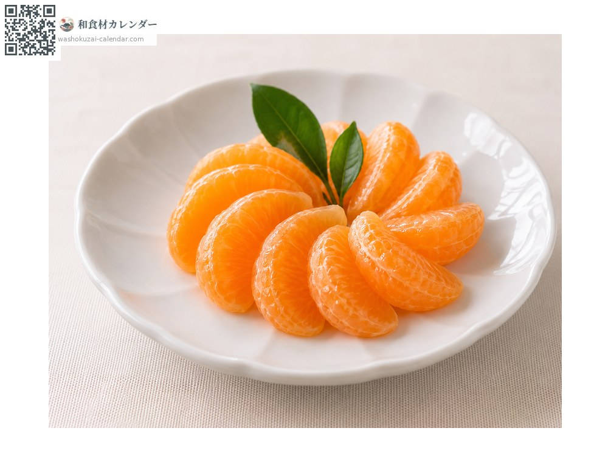
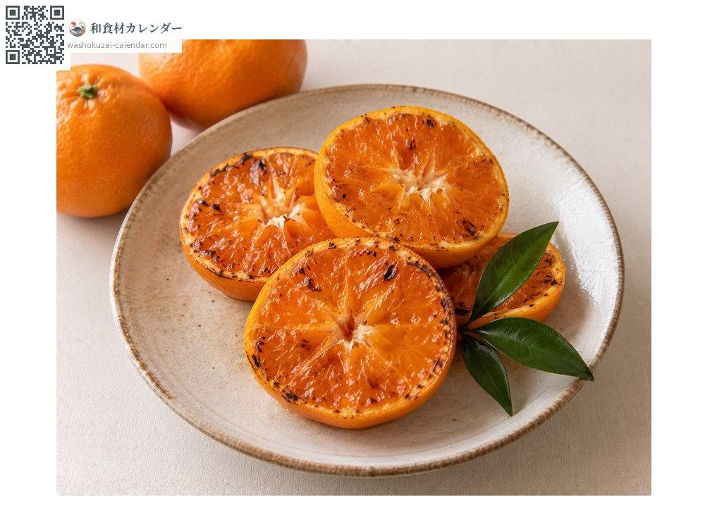
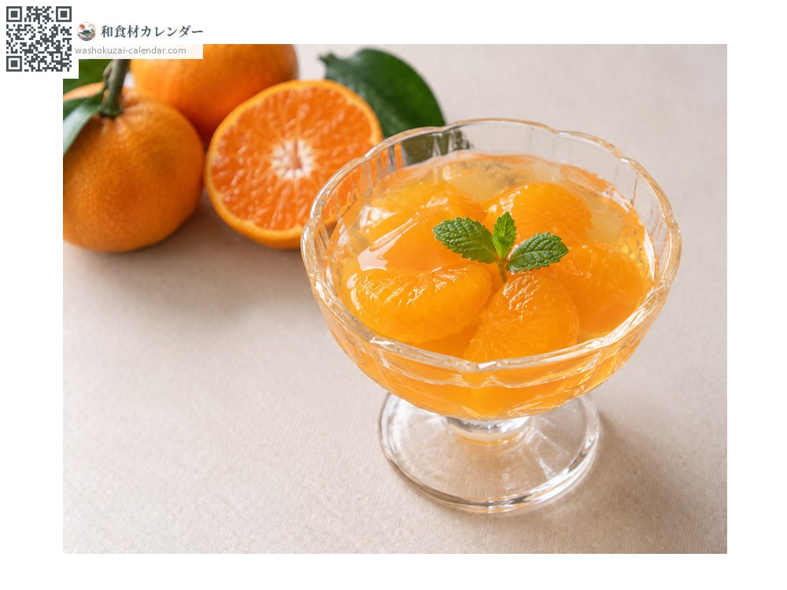
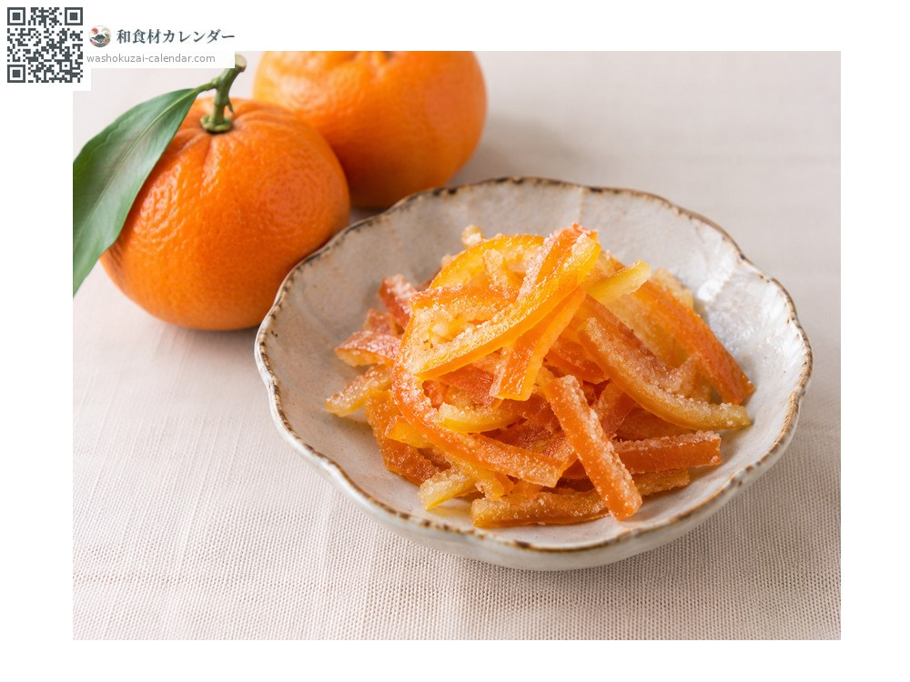

果物
ミカン
みかん
別名・別表記蜜柑、温州みかん、mikan
旬は1月・11月・12月

旬の時期
1月
2月
3月
4月
5月
6月
7月
8月
9月
10月
11月
12月
旬出回り
調理法

そのまま
皮をむいて。

焼きみかん
皮ごと炙ると甘みが増す。

ゼリー
果汁を固めて。

ピール
皮を砂糖漬けに。
選び方
皮が薄くきめ細かく、色が濃いもの。ヘタが小さく、持って重みがあるもの。
保存方法
風通しの良い冷暗所へ。箱買いの場合は下のものから傷むので時々入れ替える。
主な産地
豆知識
皮の内側の白い筋にも栄養がある。日照が多く水はけの良い斜面地が産地として適する。